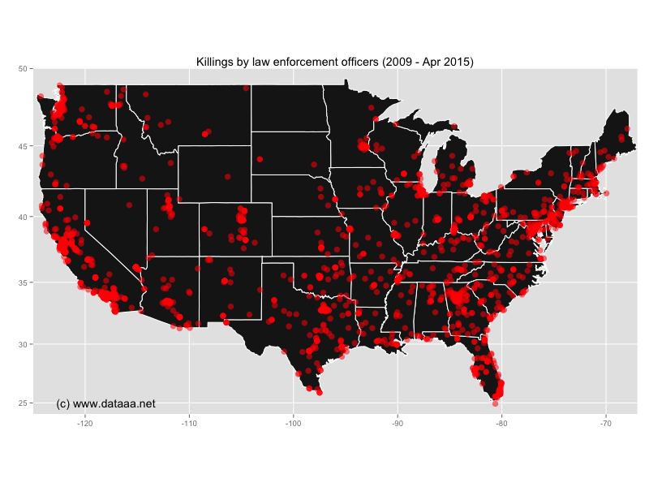

Police killings in the USA
Recently there have been a number of high-profile cases in the media of law-enforcement officials throughout the USA killing unarmed citizens. Whether this be the shooting in the back of someone stopped for a traffic violation, or the choking to death of someone selling untaxed cigarettes on the street, people are dying at the hands of a police force that pledges to serve and to protect its citizens. The most recent case is that of a man who was detained by the police, and whilst in custody, he developed life-threatening and ultimately fatal spinal injuries. The implication is that he suffered police brutality, resulting in his death. The most impactful of these killings in recent times was that of Michael Brown in Ferguson, Missouri. That event alone sparked weeks of protests in the southern USA, and country-wide.
What makes these incidents more controversial, perhaps, is the fact that the deceased are often poor, sometimes homeless, often unarmed, often of African-American ethnicity and for me, the most insidious thing is that the police officers involved have a Get-Out-Of-Jail-Free card... they just have to allege that the victim in some way reached for the officer's own taser or sidearm. Even if that is not the case. The shooting of Walter Cross, the traffic violator mentioned above, was captured in video footage. Despite the police officer's recounting of the situation, Mr. Cross did not appear to reach for any weapons. Unsubstantiated footage from Reddit allegedly shows a police officer dropping a taser next to the deceased body of Walter Cross.
I wanted to investigate how widespread these police-induced deaths have been in recent years. Thankfully there is a list of incidents on Wikipedia. Since 2009 until the present day, there have been over 2,000. Of course, not all of the deaths are reported or collated, and not all of them are 'unlawful', but that gives some idea of the scale of the problem.
Using R, I scraped the data and plotted it on a map of the USA. The problem is widespread, from coast to coast. At present, the mapped distribution is affected by population density: there are more killings in populated areas, simply because there are more people, and more police. In future weeks I will produce a choropleth map, showing the relative density of these incidents across the states of the USA.
